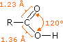
As with aldehydes, the carboxyl group must be located at the end of a carbon chain. In the IUPAC system of nomenclature the carboxyl carbon is designated #1, and other substituents are located and named accordingly. The characteristic IUPAC suffix for a carboxyl group is "oic acid", and care must be taken not to confuse this systematic nomenclature with the similar common system. These two nomenclatures are illustrated in the following table, along with their melting and boiling points.
Formula
Common Name
Source
IUPAC Name
Melting Point
Boiling Point
Substituted carboxylic acids are named either by the IUPAC system or by common names. If you are uncertain about the IUPAC rules for nomenclature you should review them now. Some common names, the amino acid threonine for example, do not have any systematic origin and must simply be memorized. In other cases, common names make use of the Greek letter notation for carbon atoms near the carboxyl group. Some examples of both nomenclatures are provided below.
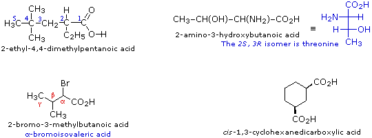
Simple dicarboxylic acids having the general formula HO2C–(CH2)n–CO2H (where n = 0 to 5) are known by the common names: Oxalic (n=0), Malonic (n=1), Succinic (n=2), Glutaric (n=3), Adipic (n=4) and Pimelic (n=5) Acids. Common names, such as these can be troublesome to remember, so mnemonic aids, which take the form of a catchy phrase, have been devised. For this group of compounds one such phrase is: "Oh My Such Good Apple Pie".
Carboxylic acids are widespread in nature, often combined with other functional groups. Simple alkyl carboxylic acids, composed of four to ten carbon atoms, are liquids or low melting solids having very unpleasant odors. The fatty acids are important components of the biomolecules known as lipids, especially fats and oils. As shown in the following table, these long-chain carboxylic acids are usually referred to by their common names, which in most cases reflect their sources. A mnemonic phrase for the C10 to C20 natural fatty acids capric, lauric, myristic, palmitic, stearic and arachidic is: "Curly, Larry & Moe Perform Silly Antics" (note that the names of the three stooges are in alphabetical order). Interestingly, the molecules of most natural fatty acids have an even number of carbon atoms. Analogous compounds composed of odd numbers of carbon atoms are perfectly stable and have been made synthetically. Since nature makes these long-chain acids by linking together acetate units, it is not surprising that the carbon atoms composing the natural products are multiples of two. The double bonds in the unsaturated compounds listed on the right are all cis (or Z).
The following formulas are examples of other naturally occurring carboxylic acids. The molecular structures range from simple to complex, often incorporate a variety of other functional groups, and many are chiral.
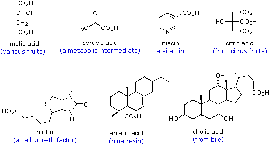
Other functional group combinations with the carbonyl group can be prepared from carboxylic acids, and are usually treated as related derivatives. Five common classes of these carboxylic acid derivatives are listed in the following table. Although nitriles do not have a carbonyl group, they are included here because the functional carbon atoms all have the same oxidation state. The top row (yellow shaded) shows the general formula for each class, and the bottom row (light blue) gives a specific example of each. As in the case of amines, amides are classified as 1º, 2º or 3º, depending on the number of alkyl groups bonded to the nitrogen.
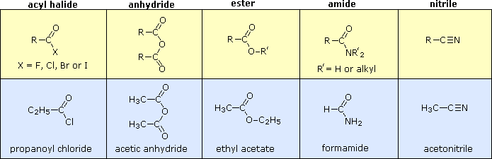
Functional groups of this kind are found in many kinds of natural products. Some examples are shown below with the functional group colored red. Most of the functions are amides or esters, cantharidin being a rare example of a natural anhydride. Cyclic esters are called lactones, and cyclic amides are referred to as lactams. Penicillin G has two amide functions, one of which is a β-lactam. The Greek letter locates the nitrogen relative to the carbonyl group of the amide.
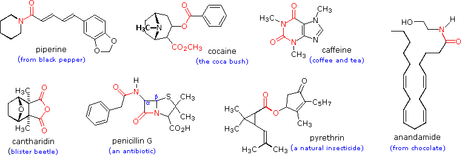
The table at the beginning of this page gave the melting and boiling points for a homologous group of carboxylic acids having from one to ten carbon atoms. The boiling points increased with size in a regular manner, but the melting points did not. Unbranched acids made up of an even number of carbon atoms have melting points higher than the odd numbered homologs having one more or one less carbon. This reflects differences in intermolecular attractive forces in the crystalline state. In the table of fatty acids we see that the presence of a cis-double bond significantly lowers the melting point of a compound. Thus, palmitoleic acid melts over 60º lower than palmitic acid, and similar decreases occur for the C18 and C20 compounds. Again, changes in crystal packing and intermolecular forces are responsible.
The factors that influence the relative boiling points and water solubilities of various types of compounds were discussed earlier. In general, dipolar attractive forces between molecules act to increase the boiling point of a given compound, with hydrogen bonds being an extreme example. Hydrogen bonding is also a major factor in the water solubility of covalent compounds To refresh your understanding of these principles Click Here. The following table lists a few examples of these properties for some similar sized polar compounds (the non-polar hydrocarbon hexane is provided for comparison).
Molecular Weight
Water Solubility
The first five entries all have oxygen functional groups, and the relatively high boiling points of the first two is clearly due to hydrogen bonding. Carboxylic acids have exceptionally high boiling points, due in large part to dimeric associations involving two hydrogen bonds. A structural formula for the dimer of acetic acid is shown here. When the mouse pointer passes over the drawing, an electron cloud diagram will appear. The high boiling points of the amides and nitriles are due in large part to strong dipole attractions, supplemented in some cases by hydrogen bonding.
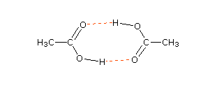
The pKa 's of some typical carboxylic acids are listed in the following table. When we compare these values with those of comparable alcohols, such as ethanol (pKa = 16) and 2-methyl-2-propanol (pKa = 19), it is clear that carboxylic acids are stronger acids by over ten powers of ten! Furthermore, electronegative substituents near the carboxyl group act to increase the acidity.
Compound
pKa
Why should the presence of a carbonyl group adjacent to a hydroxyl group have such a profound effect on the acidity of the hydroxyl proton? To answer this question we must return to the nature of acid-base equilibria and the definition of pKa , illustrated by the general equations given below. These relationships were described in an previous section of this text.
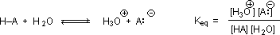
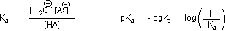
We know that an equilibrium favors the thermodynamically more stable side, and that the magnitude of the equilibrium constant reflects the energy difference between the components of each side. In an acid base equilibrium the equilibrium always favors the weaker acid and base (these are the more stable components). Water is the standard base used for pKa measurements; consequently, anything that stabilizes the conjugate base (A:(–)) of an acid will necessarily make that acid (H–A) stronger and shift the equilibrium to the right. Both the carboxyl group and the carboxylate anion are stabilized by resonance, but the stabilization of the anion is much greater than that of the neutral function, as shown in the following diagram. In the carboxylate anion the two contributing structures have equal weight in the hybrid, and the C–O bonds are of equal length (between a double and a single bond). This stabilization leads to a markedly increased acidity, as illustrated by the energy diagram displayed by clicking the "Toggle Display" button.
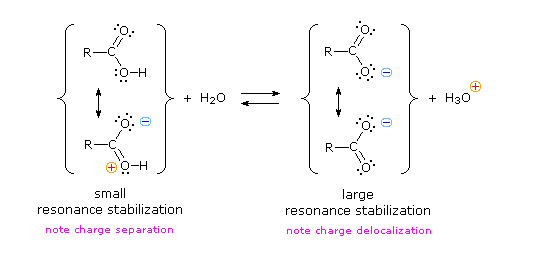
Vinylagous Acids Compounds in which an enolic hydroxyl group is conjugated with a carbonyl group also show enhanced acidity. To see examples of such compounds Click Here
The resonance effect described here is undoubtedly the major contributor to the exceptional acidity of carboxylic acids. However, inductive effects also play a role. For example, alcohols have pKa's of 16 or greater but their acidity is increased by electron withdrawing substituents on the alkyl group. The following diagram illustrates this factor for several simple inorganic and organic compounds (row #1), and shows how inductive electron withdrawal may also increase the acidity of carboxylic acids (rows #2 & 3). The acidic hydrogen is colored red in all examples.
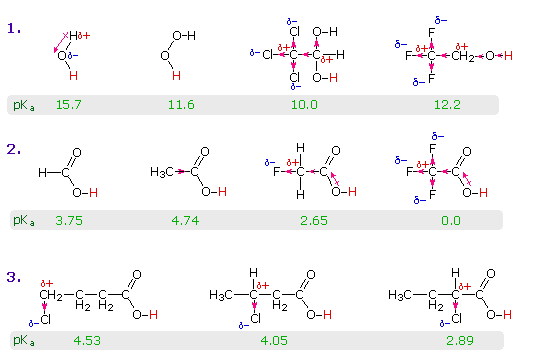
Water is less acidic than hydrogen peroxide because hydrogen is less electronegative than oxygen, and the covalent bond joining these atoms is polarized in the manner shown. Alcohols are slightly less acidic than water, due to the poor electronegativity of carbon, but chloral hydrate, Cl3CCH(OH)2, and 2,2,2,-trifluoroethanol are significantly more acidic than water, due to inductive electron withdrawal by the electronegative halogens (and the second oxygen in chloral hydrate). In the case of carboxylic acids, if the electrophilic character of the carbonyl carbon is decreased the acidity of the carboxylic acid will also decrease. Similarly, an increase in its electrophilicity will increase the acidity of the acid. Acetic acid is ten times weaker an acid than formic acid (first two entries in the second row), confirming the electron donating character of an alkyl group relative to hydrogen, as noted earlier in a discussion of carbocation stability. Electronegative substituents increase acidity by inductive electron withdrawal. As expected, the higher the electronegativity of the substituent the greater the increase in acidity (F > Cl > Br > I), and the closer the substituent is to the carboxyl group the greater is its effect (isomers in the 3rd row). Substituents also influence the acidity of benzoic acid derivatives, but resonance effects compete with inductive effects. The methoxy group is electron donating and the nitro group is electron withdrawing (last three entries in the table of pKa values).
For additional information about substituent effects on the acidity of carboxylic acids Click Here
The carbon atom of a carboxyl group has a high oxidation state. It is not surprising, therefore, that many of the chemical reactions used for their preparation are oxidations. Such reactions have been discussed in previous sections of this text, and the following diagram summarizes most of these. To review the previous discussion of any of these reaction classes simply click on the number (1 to 4) or descriptive heading for the group.
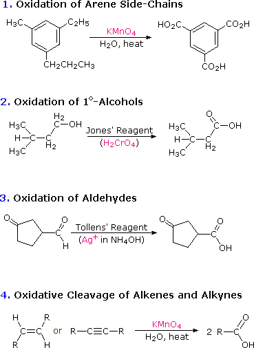
Two other useful procedures for preparing carboxylic acids involve hydrolysis of nitriles and carboxylation of organometallic intermediates. As shown in the following diagram, both methods begin with an organic halogen compound and the carboxyl group eventually replaces the halogen. Both methods require two steps, but are complementary in that the nitrile intermediate in the first procedure is generated by a SN2 reaction, in which cyanide anion is a nucleophilic precursor of the carboxyl group. The hydrolysis may be either acid or base-catalyzed, but the latter give a carboxylate salt as the initial product. In the second procedure the electrophilic halide is first transformed into a strongly nucleophilic metal derivative, and this adds to carbon dioxide (an electrophile). The initial product is a salt of the carboxylic acid, which must then be released by treatment with strong aqueous acid.
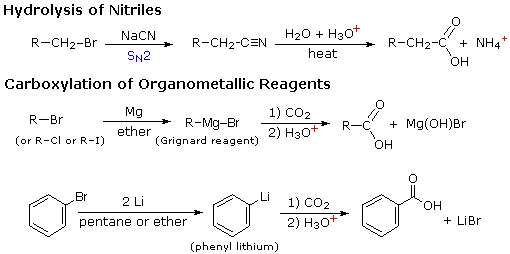
An existing carboxylic acid may be elongated by one methylene group, using a homologation procedure called the Arndt-Eistert reaction.. To learn about this useful method Click Here.
Because of their enhanced acidity, carboxylic acids react with bases to form ionic salts, as shown in the following equations. In the case of alkali metal hydroxides and simple amines (or ammonia) the resulting salts have pronounced ionic character and are usually soluble in water. Heavy metals such as silver, mercury and lead form salts having more covalent character (3rd example), and the water solubility is reduced, especially for acids composed of four or more carbon atoms.
Carboxylic acids and salts having alkyl chains longer than six carbons exhibit unusual behavior in water due to the presence of both hydrophilic (CO2) and hydrophobic (alkyl) regions in the same molecule. Such molecules are termed amphiphilic (Gk. amphi = both) or amphipathic. Depending on the nature of the hydrophilic portion these compounds may form monolayers on the water surface or sphere-like clusters, called micelles, in solution.
This reaction class could be termed electrophilic substitution at oxygen, and is defined as follows (E is an electrophile). Some examples of this substitution are provided in equations (1) through (4).
If E is a strong electrophile, as in the first equation, it will attack the nucleophilic oxygen of the carboxylic acid directly, giving a positively charged intermediate which then loses a proton. If E is a weak electrophile, such as an alkyl halide, it is necessary to convert the carboxylic acid to the more nucleophilic carboxylate anion to facilitate the substitution. This is the procedure used in reactions 2 and 3. Equation 4 illustrates the use of the reagent diazomethane (CH2N2) for the preparation of methyl esters. This toxic and explosive gas is always used as an ether solution (bright yellow in color). The reaction is easily followed by the evolution of nitrogen gas and the disappearance of the reagent's color. This reaction is believed to proceed by the rapid bonding of a strong electrophile to a carboxylate anion. The nature of SN2 reactions, as in equations 2 & 3, has been described elsewhere. The mechanisms of reactions 1 & 4 will be displayed by clicking the "Toggle Mechanism" button below the diagram.
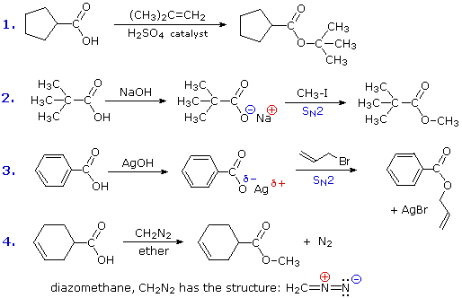
Alkynes may also serve as electrophiles in substitution reactions of this kind, as illustrated by the synthesis of vinyl acetate from acetylene. Intramolecular carboxyl group additions to alkenes generate cyclic esters known as lactones. Five-membered (gamma) and six-membered (delta) lactones are most commonly formed. Electrophilic species such as acids or halogens are necessary initiators of lactonizations. Even the weak electrophile iodine initiates iodolactonization of γ,δ- and δ,ε-unsaturated acids. Examples of these reactions will be displayed by clicking the "Other Examples" button.
Reactions in which the hydroxyl group of a carboxylic acid is replaced by another nucleophilic group are important for preparing functional derivatives of carboxylic acids. The alcohols provide a useful reference chemistry against which this class of transformations may be evaluated. In general, the hydroxyl group proved to be a poor leaving group, and virtually all alcohol reactions in which it was lost involved a prior conversion of –OH to a better leaving group. This has proven to be true for the carboxylic acids as well. Four examples of these hydroxyl substitution reactions are presented by the following equations. In each example, the new bond to the carbonyl group is colored magenta and the nucleophilic atom that has replaced the hydroxyl oxygen is colored green. The hydroxyl moiety is often lost as water, but in reaction #1 the hydrogen is lost as HCl and the oxygen as SO2. This reaction parallels a similar transformation of alcohols to alkyl chlorides, although its mechanism is different. Other reagents that produce a similar conversion to acyl halides are PCl5 and SOBr2. The amide and anhydride formations shown in equations #2 & 3 require strong heating, and milder procedures that accomplish these transformations will be described in the next chapter.
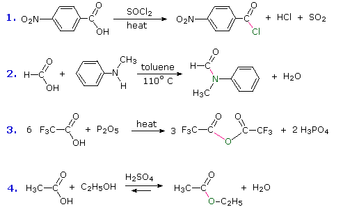
Reaction #4 is called esterification, since it is commonly used to convert carboxylic acids to their ester derivatives. Esters may be prepared in many different ways; indeed, equations #1 and #4 in the previous diagram illustrate the formation of tert-butyl and methyl esters respectively. The acid-catalyzed formation of ethyl acetate from acetic acid and ethanol shown here is reversible, with an equilibrium constant near 2. The reaction can be forced to completion by removing the water as it is formed. This type of esterification is often referred to as Fischer esterification. As expected, the reverse reaction, acid-catalyzed ester hydrolysis, can be carried out by adding excess water. A thoughtful examination of this reaction (#4) leads one to question why it is classified as a hydroxyl substitution rather than a hydrogen substitution. The following equations, in which the hydroxyl oxygen atom of the carboxylic acid is colored red and that of the alcohol is colored blue, illustrate this distinction (note that the starting compounds are in the center).
In order to classify this reaction correctly and establish a plausible mechanism, the oxygen atom of the alcohol was isotopically labeled as 18O (colored blue in our equation). Since this oxygen is found in the ester product and not the water, the hydroxyl group of the acid must have been replaced in the substitution. A mechanism for this general esterification reaction will be displayed on clicking the "Esterification Mechanism" button; also, once the mechanism diagram is displayed, a reaction coordinate for it can be seen by clicking the head of the green "energy diagram" arrow. Addition-elimination mechanisms of this kind proceed by way of tetrahedral intermediates (such as A and B in the mechanism diagram) and are common in acyl substitution reactions. Acid catalysis is necessary to increase the electrophilic character of the carboxyl carbon atom, so it will bond more rapidly to the nucleophilic oxygen of the alcohol. Base catalysis is not useful because base converts the acid to its carboxylate anion conjugate base, a species in which the electrophilic character of the carbon is reduced. Since a tetrahedral intermediate occupies more space than a planar carbonyl group, we would expect the rate of this reaction to be retarded when bulky reactants are used. To test this prediction the esterification of acetic acid was compared with that of 2,2-dimethylpropanoic acid, (CH3)3CO2H. Here the relatively small methyl group of acetic acid is replaced by a larger tert-butyl group, and the bulkier acid reacted fifty times slower than acetic acid. Increasing the bulk of the alcohol reactant results in a similar rate reduction.
The carbon atom of a carboxyl group is in a relatively high oxidation state. Reduction to a 1º-alcohol takes place rapidly on treatment with the powerful metal hydride reagent, lithium aluminum hydride, as shown by the following equation. One third of the hydride is lost as hydrogen gas, and the initial product consists of metal salts which must be hydrolyzed to generate the alcohol. These reductions take place by the addition of hydride to the carbonyl carbon, in the same manner noted earlier for aldehydes and ketones. The resulting salt of a carbonyl hydrate then breaks down to an aldehyde that undergoes further reduction.
Diborane, B2H6, reduces the carboxyl group in a similar fashion. Sodium borohydride, NaBH4, does not reduce carboxylic acids; however, hydrogen gas is liberated and salts of the acid are formed. Partial reduction of carboxylic acids directly to aldehydes is not possible, but such conversions have been achieved in two steps by way of certain carboxyl derivatives. These will be described later.
Because it is already in a high oxidation state, further oxidation removes the carboxyl carbon as carbon dioxide. Depending on the reaction conditions, the oxidation state of the remaining organic structure may be higher, lower or unchanged. The following reactions are all examples of decarboxylation (loss of CO2). In the first, bromine replaces the carboxyl group, so both the carboxyl carbon atom and the remaining organic moiety are oxidized. Silver salts have also been used to initiate this transformation, which is known as the Hunsdiecker reaction. The second reaction is an interesting bis-decarboxylation, in which the atoms of the organic residue retain their original oxidation states. Lead tetraacetate will also oxidize mono-carboxylic acids in a manner similar to reaction #1. Finally, the third example illustrates the general decarboxylation of β-keto acids, which leaves the organic residue in a reduced state (note that the CO2 carbon has increased its oxidation state.).
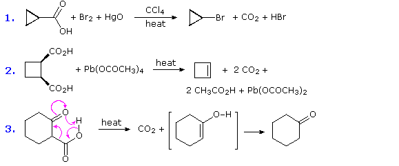
Three additional examples of the Hunsdiecker reaction and a proposed mechanism for the transformation will be shown above by clicking on the diagram. Note that the meta- dihalobenzene formed in reaction 4 could not be made by direct halogenation reactions, since chlorine and bromine are ortho/para-directing substituents. Also, various iodide derivatives may be prepared directly from the corresponding carboxylic acids. A heavy metal carboxylate salt is transformed into an acyl hypohalide by the action of a halogen. The weak oxygen-halogen bond in this intermediate cleaves homolytically when heated or exposed to light, and the resulting carboxy radical decarboxylates to an alkyl or aryl radical. A chain reaction then repeats these events. Since acyl hypohalites are a source of electrophilic halogen, this reaction takes a different course when double bonds and reactive benzene derivatives are present. In this respect remember the addition of hypohalous reagents to double bonds and the facile bromination of anisole.
For a summary of the basic reactions of carboxylic acids Click Here
The following problems review many aspects of carboxylic acid chemistry. The first two questions concern nomenclature, including some carboxylic derivatives. The third and fourth questions focus on the relative acidity of selected compounds. The fifth asks you to draw the product of a reaction selected from 48 possible combinations of carboxylic acids and reagents.
This page is the property of The Edvibe Team. Comments, questions and errors should be sent to contact@edvibe.co.ke. These pages are provided to the IOCD to assist in capacity building in chemical education. 05/05/2013